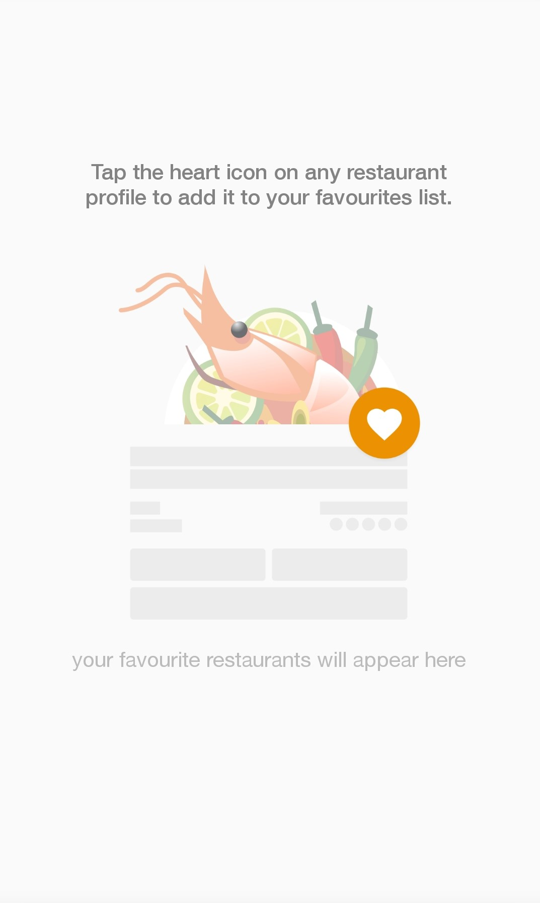

<!--
  Generated template for the FavouritesPage page.

  See http://ionicframework.com/docs/components/#navigation for more info on
  Ionic pages and navigation.
-->
<ion-header>
  <ion-navbar>
    <ion-title text-center>Favourites</ion-title>
  </ion-navbar>
</ion-header>
<ion-content style="width:100%;" [hidden]="ishidden">
  <ion-list>
    <ion-item *ngFor="let menu of favs" >
      <ion-label class="fulllabel" >
        <button class="wholebutton" item-right (click)="goToMenuPage(menu.menuId)">
          <h3 text-left>{{menu.fName}} </h3>
          <p text-left style="color:grey;">{{menu.menuName}} </p>
          <p text-left>{{menu.menu_category}} </p>
        </button>
      </ion-label>
    </ion-item>
  </ion-list>

</ion-content>
<ion-content style="width:100%;" [hidden]="ishiddenimg">
  <ion-label class="fulllabel" >
     
    </ion-label>
</ion-content>
